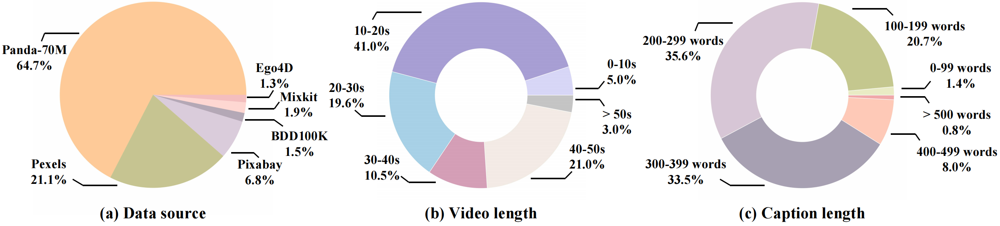

🤗
🎬
We present the ShareGPT4Video series, aiming to facilitate the video understanding of large video-language models (LVLMs) and the video generation of text-to-video models (T2VMs) via dense and precise captions. The series comprises: 1) ShareGPT4Video, 40K GPT4V annotated dense captions of videos with various lengths and sources, developed through carefully designed data filtering and annotating strategy. 2) ShareCaptioner-Video, an efficient and capable captioning model for arbitrary videos, with 4.8M high-quality aesthetic videos annotated by it. 3) ShareGPT4Video-8B, a simple yet superb LVLM that reached SOTA performance on three advancing video benchmarks. To achieve this, taking aside the non-scalable costly human annotators, we find using GPT4V to caption video with a naive multi-frame or frame-concatenation input strategy leads to less detailed and sometimes temporal-confused results. We argue the challenge of designing a high-quality video captioning strategy lies in three aspects: 1) Inter-frame precise temporal change understanding. 2) Intra-frame detailed content description. 3) Frame-number scalability for arbitrary-length videos. To this end, we meticulously designed a differential video captioning strategy, which is stable, scalable, and efficient for generating captions for videos with arbitrary resolution, aspect ratios, and length. Based on it, we construct ShareGPT4Video, which contains 40K high-quality videos spanning a wide range of categories, and the resulting captions encompass rich world knowledge, object attributes, camera movements, and crucially, detailed and precise temporal descriptions of events. Based on ShareGPT4Video, we further develop ShareCaptioner-Video, a superior captioner capable of efficiently generating high-quality captions for arbitrary videos. We annotated 4.8M aesthetically appealing videos by it and verified their effectiveness on a 10-second text2video generation task. For video understanding, we verified the effectiveness of ShareGPT4Video on several current LVLM architectures and presented our superb new LVLM ShareGPT4Video-8B. All the models, strategies, and annotations(We do not hold the copyright for any video and will provide the link-annotation pair for research-only usage.) will be open-sourced and we hope this project can serve as a pivotal resource for advancing both the LVLMs and T2VMs community.
(a) The proposed ShareGPT4Video dataset contains a large volume of high-quality video-caption pairs collected from diverse sources, with 40K captions from GPT4V and 4.8M captions from our ShareCaptioner-Video. (b) We illustrate in detail the process of harnessing the multi-modal image model GPT4V to generate high-quality captions for videos. (c) Our unique captioning strategy enables the re-caption of sub-clips by reusing their differential captions.
Dataset Statics Data Source Samples Total Time(hours) Avg. Time(sec) Avg. Length(#word) Panda-70M 27092 204.4 27.2 291.2 Pexels 8487 52.2 22.1 254.9 Pixabay 2725 20.3 26.9 209.3 BDD100K 608 6.6 39.0 371.3 Mixkit 745 3.6 17.5 213.9 Ego4D 521 3.9 27.1 298.9 Total 40178 291 26.6 273.3  Comprehensive video-caption dataset: (a) The dataset covers a broad spectrum of content, including wildlife, cooking, sports, scenery, ego-centric human activities, auto-driving scenarios, etc. (b) The dataset includes videos ranging from 2 seconds to 2 minutes in length. (c) The captions primarily range from 200 to 400 words, providing rich temporal information that serves video understanding and generation tasks well. Pipeline ShareGPT4Video Dataset Pipeline
Comprehensive video-caption dataset: (a) The dataset covers a broad spectrum of content, including wildlife, cooking, sports, scenery, ego-centric human activities, auto-driving scenarios, etc. (b) The dataset includes videos ranging from 2 seconds to 2 minutes in length. (c) The captions primarily range from 200 to 400 words, providing rich temporal information that serves video understanding and generation tasks well.
ShareGPT4Video Dataset Pipeline
The ShareCaptioner-Video is a Four-in-One exceptional video captioning model with the following capabilities: Fast captioning, Sliding Captioning, Clip Summarizing, and Prompt Re-Captioning
Statics of 4.8M high-quality video-caption pairs generated by our ShareCaptioner-Video.
A qualitative comparison of caption quality from various sources. Mistakes within the captions are highlighted in red, whereas detailed and accurate parts are emphasized in blue
We have generated a large volume of video-caption pairs with our ShareCaptioner-Video and trained a text-to-video model with the Open-Sora-Plan repository. Here are some interesting cases: